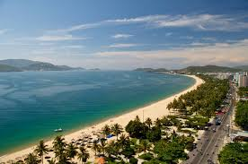

Bãi dài
Hòn Chồng
Hòn Chồng là một thắng cảnh tự nhiên ở thành phố Nha Trang, thuộc khóm Hòn Chồng, phường Vĩnh Phước. Khu vực này là một bãi đá được xếp chồng lên nhau một cách tự nhiên, ngoài ra còn có Hòn vợ ở gần đó và Hội quán vịnh Nha Trang có dạng nhà rường Huế được xây ở phía trên.
Bãi Dài nằm giữa sân bay Cam Ranh và thành phố biển Nha Trang 10 km, cách sân bay 12 km.Bãi cát ở đây mịn và rất sạch. Những ngày biển êm, triều rút xa, biển lộ ra cả một vùng cát rộng mênh mông
Và còn nhiều Nhà Hàng Hải Sản khác được chúng tôi tổng hợp, các bạn có thể tham khảo tại đây. Nguồn từ: nhatrangtoday.vn
| SDT: | 0908281222 |
| Email: | uthanhtra@gmail.com |
| Locate: | Hon Chong, Nha Trang |